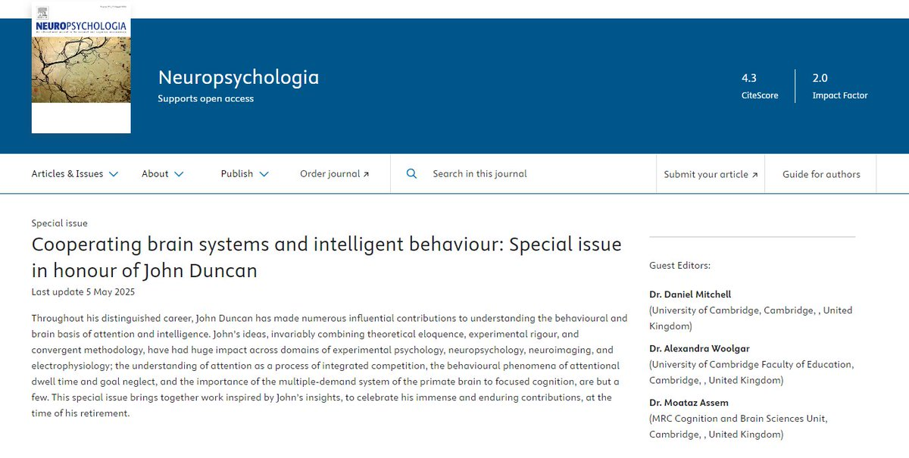
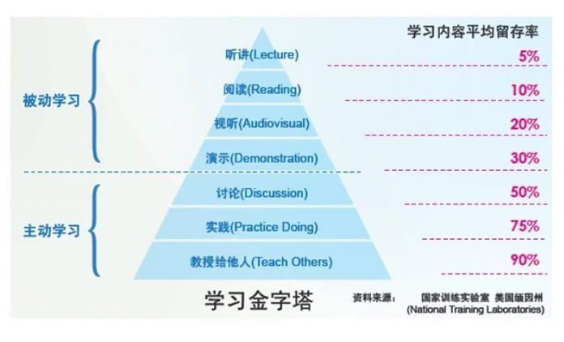

可以閱讀CBU的Prof. John Duncan的這個特刊。
當然，我這裡還有三篇簡要講述了為什麼教授他人對自學更有用的paper。
https://t.co/ZcKnB966MI
https://t.co/C7WHcalBWO
https://t.co/WLjEu4nJac

當然，我這裡還有三篇簡要講述了為什麼教授他人對自學更有用的paper。
https://t.co/ZcKnB966MI
https://t.co/C7WHcalBWO
https://t.co/WLjEu4nJac


这就是为什么大多数人无法自学的原因：过于高估自己
每次毕业生培训，讲的东西很多学生就会说，就这？我们以前实验室多么牛叉，巴拉巴拉，然后给个题搞不出来
去做架构咨询，被人嘲笑你们不就是拉人一点点梳理在墙上贴便利贴嘛，这有啥，我晚上回去就给你整理出来，然后各种逻辑、场景经不起推敲。 https://t.co/1edWvTXhfI https://t.co/ycgfQ0YQvB
每次毕业生培训，讲的东西很多学生就会说，就这？我们以前实验室多么牛叉，巴拉巴拉，然后给个题搞不出来
去做架构咨询，被人嘲笑你们不就是拉人一点点梳理在墙上贴便利贴嘛，这有啥，我晚上回去就给你整理出来，然后各种逻辑、场景经不起推敲。 https://t.co/1edWvTXhfI https://t.co/ycgfQ0YQvB